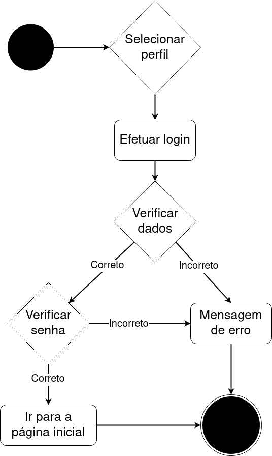
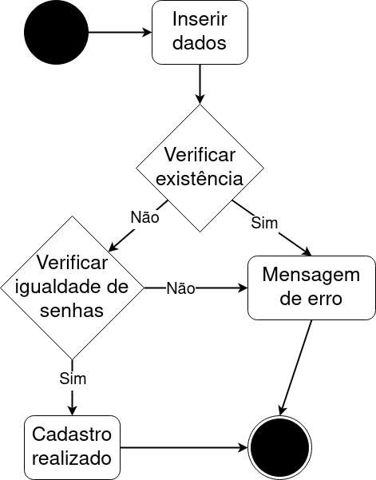
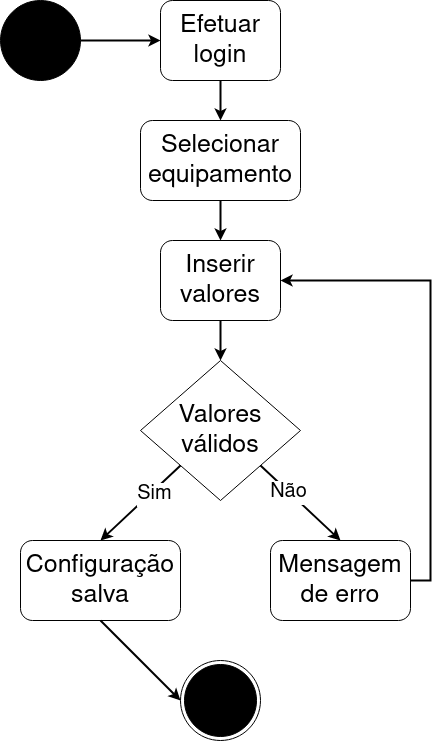
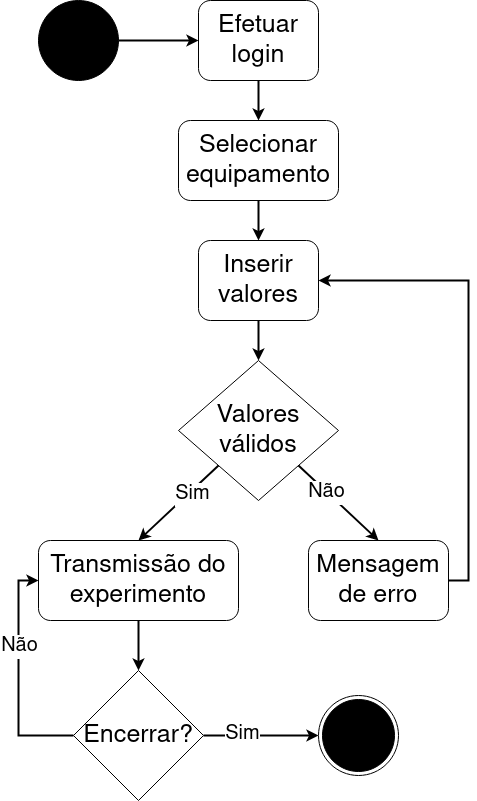

DIAGRAMA DE ATIVIDADES
Histórico de versão
| Data | Versão | Descrição | Autor(es) |
|---|---|---|---|
| 26.04.2021 | 0.1 | Criação do documento | Bruna Almeida Damarcones Porto |
| 26.04.2021 | 0.2 | Adição dos diagramas | Bruna Almeida Damarcones Porto |
Participantes
- Bruna Almeida
- Damarcones Porto
Introdução
O Diagrama de atividade é um diagrama definido pela Linguagem de Modelagem Unificada (UML), e representa os fluxos conduzidos por processamentos. É essencialmente um gráfico de fluxo, mostrando o fluxo de controle de uma atividade para outra. Comumente isso envolve a modelagem das etapas sequenciais em um processo computacional.
O objetivo do diagrama de atividades é mostrar o fluxo de atividades em um único processo. O diagrama mostra como uma atividade depende da outra.
Diagramas de atividade oferecem uma série de benefícios para os usuários, como: Demonstrar a lógica de um algoritmo; Descrever as etapas realizadas em um caso de uso UML; Ilustrar um processo de negócio ou fluxo de trabalho entre usuários e o sistema; Modelar elementos de arquitetura de software, como método, função e operação.
Os símbolos utilizados nos diagrama de atividades do projeto Gama Boyle Lab estão apresentados a seguir:
O objetivo do diagrama de atividades é mostrar o fluxo de atividades em um único processo. O diagrama mostra como uma atividade depende da outra.
Diagramas de atividade oferecem uma série de benefícios para os usuários, como: Demonstrar a lógica de um algoritmo; Descrever as etapas realizadas em um caso de uso UML; Ilustrar um processo de negócio ou fluxo de trabalho entre usuários e o sistema; Modelar elementos de arquitetura de software, como método, função e operação.
Os símbolos utilizados nos diagrama de atividades do projeto Gama Boyle Lab estão apresentados a seguir:

Diagramas
Login

O diagrama apresenta as ações necessárias para que seja possível realizar o login e suas possíveis ações, dependendo do que ocorra na requisição.
Cadastro

O diagrama apresenta como se dará o processo de cadastro dos usuários do tipo aluno.
Regulagem de equipamento

O diagrama apresenta como se dará o processo de regulagem do equipamento, por parte do aluno antes de realizar o experimeto ou o técnico a qualquer momento.
Realização de experimento

O diagrama mostra as ações que levam à realização de um experimento, que pode ser feito pelos três tipos de usuário: aluno, professor e técnico.
Referências
LUCIDCHART, O que é diagrama de atividades UML?. Disponível em: lucidchart.com/pages/pt/o-que-e-diagrama-de-atividades-uml. Acesso em 26 de abril de 2021.
UFMG, Diagrama de Atividades. Disponível em: homepages.dcc.ufmg.br/~amendes/GlossarioUML/glossario/conteudo/atividades/diagrama_de_atividades.htm. Acesso em 26 de abril de 2021.
DSC, Diagrama de Atividades. Disponível em: dsc.ufcg.edu.br/~jacques/cursos/map/html/uml/diagramas/atividades/diag_atividades.htm. Acesso em 26 de abril de 2021.
Todos os diagramas foram desenvolvidos na plataforma Draw.io.